<main>

    <!-- Set the general css settings for the whole page. -->
    <link rel="stylesheet" href="Design/main.css">
    <link rel="stylesheet" href="Design/slideshow.css">
    <link rel="stylesheet" href="Design/lightbox.css">
    <link rel="stylesheet" href="Design/curtainmenu.css">
    
<head>
       <title>Ege Ilicak</title>
</head>
<body class="alternate" onkeydown="SlideByKey()">
       <span class="cs_menu" onclick="openNav()">&#9776; EGE ILICAK</span>
       <div id = "CurtainMenu" class="overlay">
           <a class="closebtn" onclick="closeNav()">&times;</a>
           <div id = "MainMenu" class="overlay-content"></div>
           <script src="Controller/navigation.js"></script>
       </div>
       <span class="navigationBox nextBox" onclick="PlusSlides(1)">NEXT</span>
       <span class="navigationBox prevBox" onclick="PlusSlides(-1)">PREVIOUS</span>
       <div id="ImageLightBox" class="modal">
              <div class="slideshow-container"">                     
                                   <div class="mySlides fade">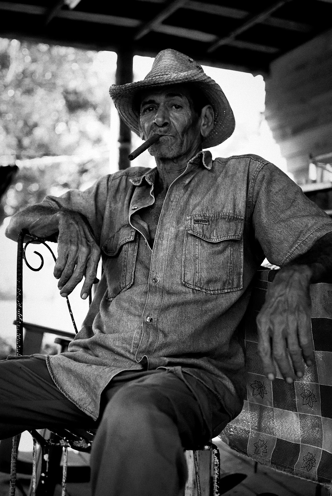</div>
                                   <div class="mySlides fade">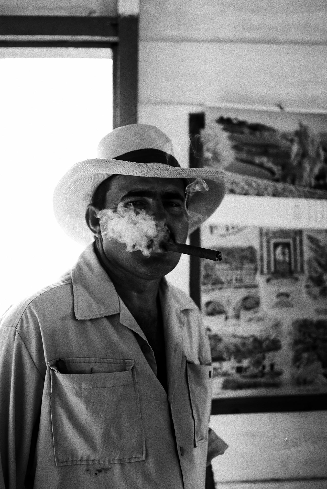</div>
                                   <div class="mySlides fade">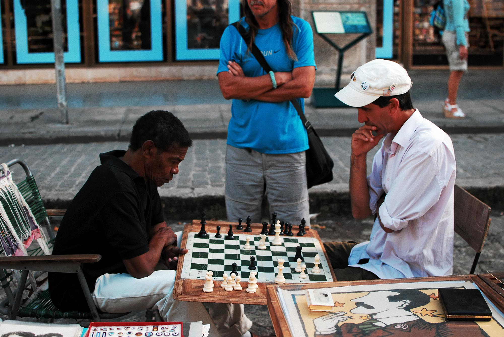</div>
                                   <div class="mySlides fade">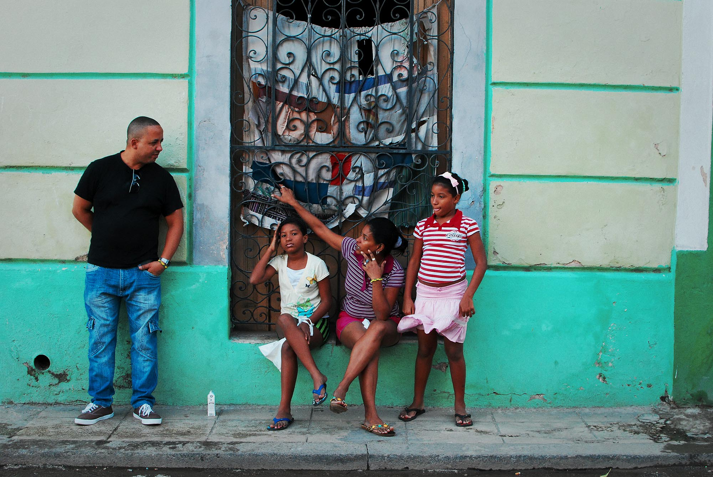</div>
                                   <div class="mySlides fade"></div>           
                                   <div class="mySlides fade">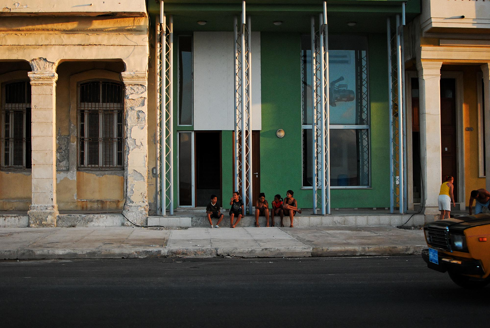</div>              
                                   <div class="mySlides fade">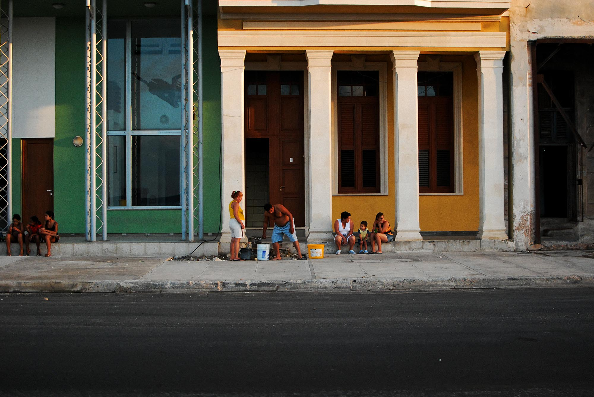</div>
                                   <div class="mySlides fade">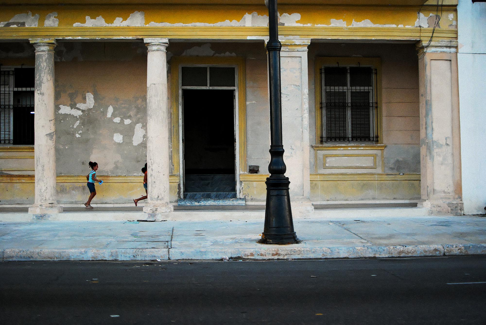</div>
                                   <div class="mySlides fade">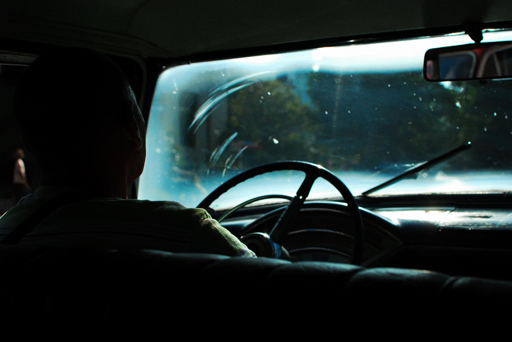</div>
                                   <div class="mySlides fade">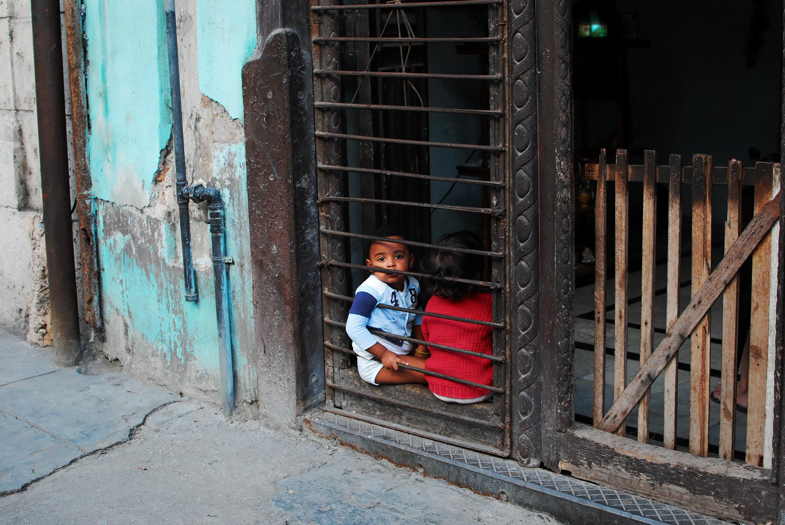</div>           
                                   <div class="mySlides fade">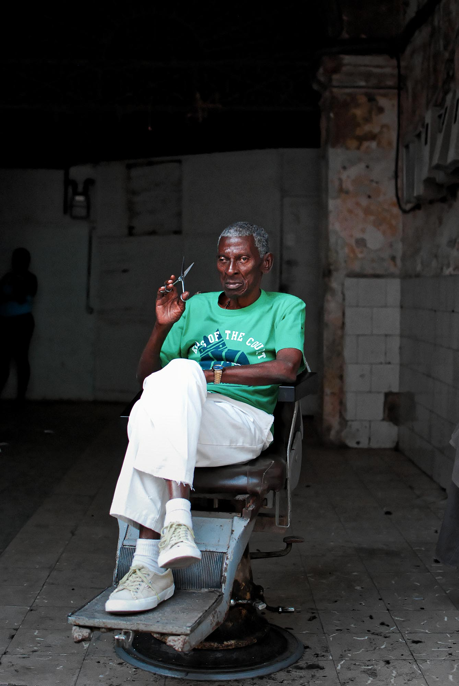</div>           
                                   <div class="mySlides fade">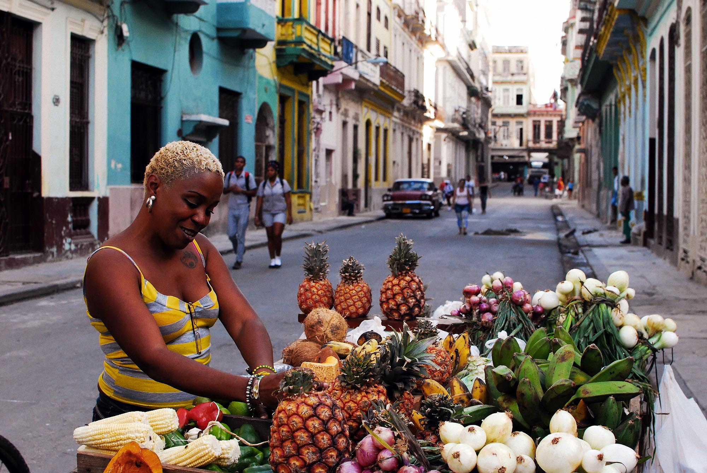</div>       
                                   <div class="mySlides fade">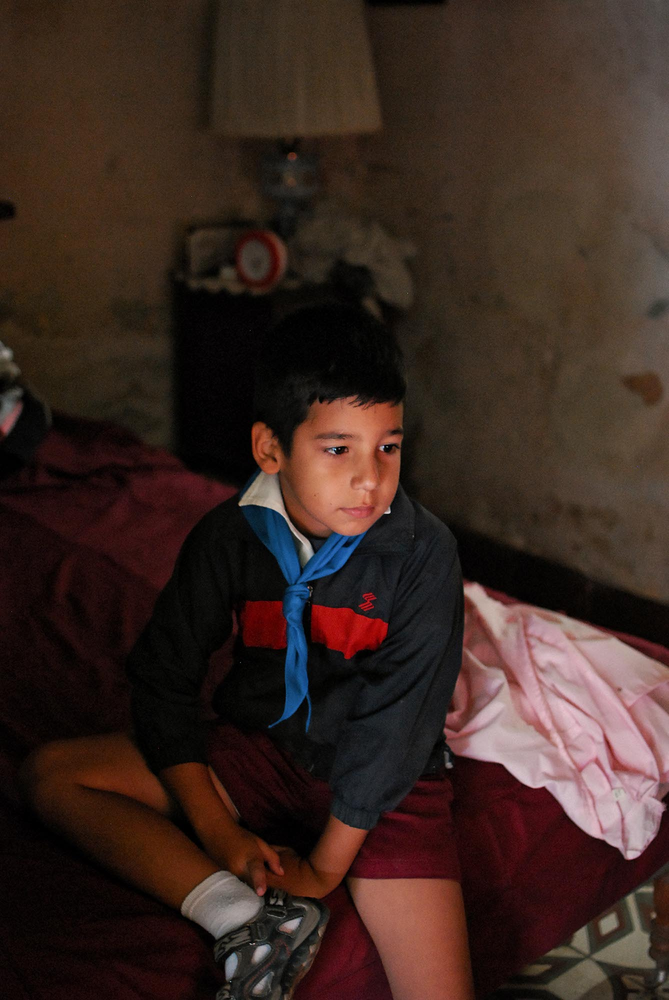</div>    
                                   <div class="mySlides fade">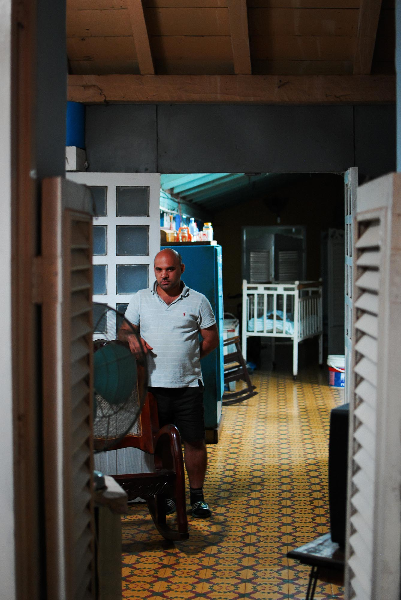</div>     
                                   <div class="mySlides fade">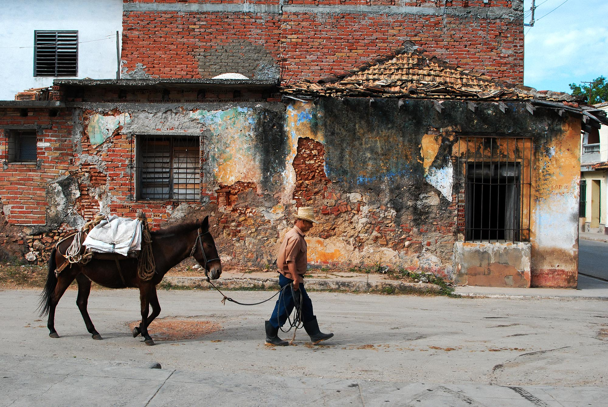</div>   
                                   <div class="mySlides fade">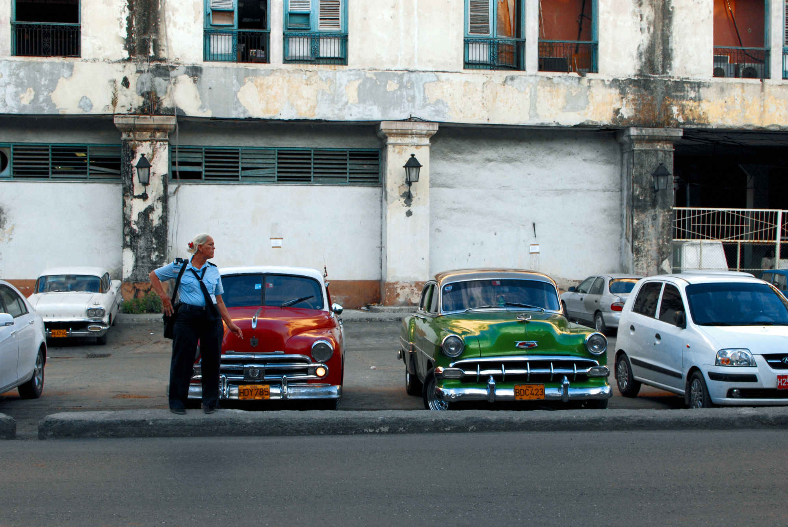</div>                    

                            <!-- Next & previous arrows, obsolete */
                     <a class="prev" onclick="PlusSlides(-1)">&#10094;</a>
                     <a class="next" onclick="PlusSlides(1)">&#10095;</a>
                     -->
                     </div>
       </div>
       <script src="Controller/slider.js"></script>
       <script src="Controller/lightbox.js"></script>
 </body>  
  
</main>

<!--December 2012. I was lucky enough to visit Cuba, unique country of Central America. My journey started from Havana and moved on to Pinar del Rio; which is then followed by a road trip until reaching to southern coast, Trinidad..
Here you will find pictures from Havana streets through to the tobacco ranchers of Vi&ntildeales Valley, portraits of Trinidad people through instantaneous shots of Havana streets..  -->
